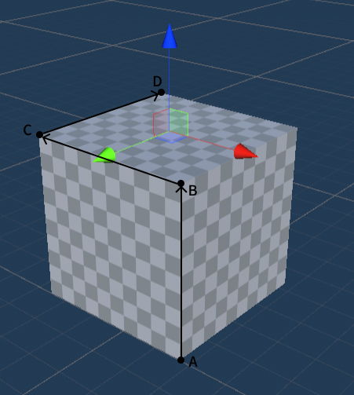

Room Calibration
Room calibration is a system-level application provided by Play Form Dream, used to ensure precise alignment between virtual objects and the physical environment. Through room calibration, the realism and stability of virtual reality programs can be improved, providing users with a more interactive and immersive experience. Users can use the room calibration application to calibrate objects such as walls, doors, windows, tables, chairs, and sofas in the real room. Developers can obtain the calibration data created by users through the SDK and use it in their own applications.
Requirements
You can obtain room information and calibration data created by the room calibration application through the SDK interface and use it in your own applications. You can also create your own anchors within the application.
- SDK Version: Unity SDK 2.8.0 and above
- Device Model: YVR2, Play Form Dream MR
- System Version: DreamOS 1.3.0 and above
Note
- Data Modification Permission: Third-party applications cannot create rooms, only the room calibration application can modify data.
- Data Reading Permission: Both the room calibration application and third-party applications can read room calibration data.
Please ensure that the Spatial Anchor Support and Scene Support checkboxes are selected in the YVRManager script panel.
Note
After selecting the Spatial Anchor Support and Scene Support checkboxes, the corresponding permissions for anchors will be added to the AndroidManifest.xml file.
> <uses-permission android:name="com.yvr.permission.USE_ANCHOR_API"\> >
> <uses-permission android:name="com.yvr.permission.USE_SCENE"\>
com.yvr.permission.USE_SCENE is a runtime permission that allows the application to query spatial data on the user's device only when the user grants the permission. Requesting Android runtime permissions makes a permission request.
Components that Scene Anchors Can Include
Scene Anchors need components to describe the calibrated environment. Therefore, the application needs to query whether the Scene Anchor supports a given component and whether the component is enabled to obtain the spatial information contained in the anchor.
- Locatable: A locatable component that notifies the system that this location point can be tracked. Once enabled, the application can continuously query the pose information of the location point.
- Storable: A storable component that, once enabled, indicates that the anchor can be saved.
- RoomLayout: A room layout component that includes references to the ceiling, walls, and floor anchors that make up the room.
- AnchorContainer: Contains references to other objects (sofas, coffee tables, windows, etc.) in the room.
- Bounded2D: Locating point information for 2D plane data, including the width and height of the plane and the offset on the x and y axes relative to the anchor (or the indexed triangular mesh of a non-rectangular plane).
- Bounded3D: 3D cuboid data, including length, width, height, and the offset on the x, y, z axes relative to the anchor.
- SemanticLabels: Semantic labels of the anchor, which can classify the anchor into multiple categories. For more details, refer to the following section.
Common Scene Anchors
The scene anchors of the room will have:
- RoomLayout component for referencing the ceiling, walls, and floor.
- AnchorContainer component for storing all scene anchors within the room.
Scene anchors for 2D elements (such as walls, ceilings, floors, windows, etc.) have: Locatable component for obtaining the anchor position; SemanticLabels semantic label component; Boundary2D plane size data.
Scene anchors for 3D elements (such as sofas, coffee tables, tables, etc.) have: Locatable component for obtaining the anchor position; SemanticLabels semantic label component; Bounded3D cuboid information.

Anchor Semantic Classification
Semantic classification categorizes Scene Anchors into a predefined list of system-managed object types. Semantics separate objects into their corresponding geometric descriptions to provide application developers with game logic specific to the classification. Supported semantic labels:
| Semantic Type | Description | |
|---|---|---|
| FLOOR | Floor | 2D |
| CEILING | Ceiling | 2D |
| WALL_FACE | Wall Face | 2D |
| COUCH | Couch | 3D |
| DOOR_FRAME | Door Frame | 2D |
| WINDOW_FRAME | Window Frame | 2D |
| OTHER | Other | 3D |
| TABLE | Table | 3D |
| BED | Bed | 3D |
Note
This list of labels is constantly evolving as we regularly add support for more 2D and 3D objects.
Anchor Coordinate Axes
The coordinate axes direction of 2D and 3D elements created by the room calibration application depends on their type and creation order, as follows:
Wall, Door, Window
The origin is located at the center of the wall face.
- +X: According to the left-hand coordinate system, counterclockwise from top to bottom
- +Y: Vertically upward from the ground
- +Z: Perpendicular to the wall face inward
Floor
The origin is located at the geometric center of the floor.
- +X: Clockwise along the wall face direction from the first drawn point when viewed from above
- +Y: Determined by the left-hand coordinate system
- +Z: Vertically upward
Ceiling
The origin is located at the geometric center of the ceiling.
- +X: Opposite direction of the floor's -X
- +Y: Determined by the left-hand coordinate system
- +Z: Vertically downward
Sofa, Bed, Table, and Others

The first line AB draws the height, then draws the two edges BC and CD of the top surface. The origin is located at the center of the top surface.
- +X: CB direction
- +Y: Determined by the left-hand coordinate system
- +Z: AB direction
Interface for Obtaining Room Calibration Data
Get Room Layout Information of the Anchor
The YVRSceneAnchor.instance.GetAnchorRoomLayout interface obtains the room layout information of the anchor.
/// <summary>
/// Get the room layout information of the specified spatial anchor.
/// </summary>
/// <param name="anchorHandle">Handle of the spatial anchor</param>
/// <param name="roomLayout">Returned room layout information</param>
/// <returns>True if the room layout information is successfully obtained; otherwise, false</returns>
public bool GetAnchorRoomLayout(ulong anchorHandle, out YVRRoomLayout roomLayout)
YVRRoomLayout contains the UUIDs of the floor, ceiling, and wall anchors.
public struct YVRRoomLayout
{
// Floor anchor
public YVRSpatialAnchorUUID floorUuid;
// Ceiling anchor
public YVRSpatialAnchorUUID ceilingUuid;
// List of wall anchors
public YVRSpatialAnchorUUID[] wallUuids;
}
Get Container Information of the Anchor
The YVRSceneAnchor.instance.GetAnchorContainer interface obtains the container information of the anchor.
/// <summary>
/// Get the container information of the specified spatial anchor.
/// </summary>
/// <param name="anchorHandle">Handle of the spatial anchor</param>
/// <param name="containerUuids">Returned list of container UUIDs</param>
/// <returns>True if the container information is successfully obtained; otherwise, false</returns>
public bool GetAnchorContainer(ulong anchorHandle, out List<YVRSpatialAnchorUUID> containerUuids)
Get Rectangular Plane of the Anchor
The YVRSceneAnchor.instance.GetAnchorBoundingBox2D interface provides access to the rectangular plane information of the anchor.
/// <summary>
/// Get the 2D bounding box information of the specified spatial anchor.
/// </summary>
/// <param name="anchorHandle">Handle of the spatial anchor</param>
/// <param name="boundingBox2D">Returned 2D bounding box information</param>
/// <returns>True if the bounding box information is successfully obtained; otherwise, false</returns>
public bool GetAnchorBoundingBox2D(ulong anchorHandle, out YVRRect2D boundingBox2D)
YVRRect2D contains the width and height of the plane and the offset on the x and y axes relative to the anchor's pose origin.
public struct YVRRect2D
{
// Offset of the plane relative to the anchor on the x and y axes
public Vector2 offset;
// Width and height of the plane
public Vector2 extent;
}
Get 3D Bounding Box of the Anchor
The YVRSceneAnchor.instance.GetAnchorBoundingBox3D interface provides access to the 3D information of the anchor.
/// <summary>
/// Get the 3D bounding box information of the specified spatial anchor.
/// </summary>
/// <param name="anchorHandle">Handle of the spatial anchor</param>
/// <param name="boundingBox3D">Returned 3D bounding box information</param>
/// <returns>True if the bounding box information is successfully obtained; otherwise, false</returns>
public bool GetAnchorBoundingBox3D(ulong anchorHandle, out YVRRect3D boundingBox3D)
YVRRect3D contains the length, width, and height of the 3D object and the offset on the x, y, z axes relative to the anchor's pose origin.
public struct YVRRect3D {
// Offset of the 3D object relative to the anchor's origin on the x, y, z axes
public Vector3 offset;
// Length, width, and height of the 3D object
public Vector3 extent;
}
Get Irregular Plane Vertex Information of the Anchor
The YVRSceneAnchor.instance.GetAnchorBoundary2D interface returns the non-rectangular plane information of the anchor.
/// <summary>
/// Get the plane vertex information of the anchor.
/// </summary>
/// <param name="anchorHandle">Handle of the spatial anchor</param>
/// <param name="boundary">Returned collection of plane vertices</param>
/// <returns>True if the boundary information is successfully obtained; otherwise, false</returns>
public bool GetAnchorBoundary2D(ulong anchorHandle, out List<Vector2> boundary)
Get Semantic Labels of the Anchor
The YVRSceneAnchor.instance.GetAnchorSemanticLabels interface returns the semantic labels of the anchor.
/// <summary>
/// Get the semantic label information of the anchor.
/// </summary>
/// <param name="anchorHandle">Handle of the spatial anchor</param>
/// <param name="labels">Returned semantic label strings</param>
/// <returns>True if the semantic label information is successfully obtained; otherwise, false</returns>
public bool GetAnchorSemanticLabels(ulong anchorHandle, out string labels)
Note
When the component type supported by the anchor is Bounded2D, you can use the GetAnchorBoundingBox2D interface to obtain rectangular plane data, or use GetAnchorBoundary2D to obtain the plane's vertex data. (If the calibrated plane is non-rectangular, using GetAnchorBoundingBox2D will return the corresponding minimum bounding rectangle based on the plane vertex information.)
Launch Room Calibration Application
Call the YVRSceneAnchor.instance.RequestSceneCapture interface to enable the room calibration application for room calibration.
Process for Obtaining Room Calibration Data
You can retrieve the content of room calibration data through the following process:
- Query anchors with the RoomLayout component through the YVRSpatialAnchor.instance.QuerySpatialAnchor interface.
- For the queried RoomLayout component anchors, obtain all sub-anchors under the room calibration through the YVRSceneAnchor.instance.GetAnchorContainer interface.
- Use UUIDs to loop through all sub-anchors queried through the YVRSpatialAnchor.instance.QuerySpatialAnchor interface.
- For the queried sub-anchors, call YVRSpatialAnchor.instance.GetSpatialAnchorComponentStatus to check whether they support the corresponding component types.
- If you want to know the dimensions, call GetAnchorBoundingBox2D, GetAnchorBoundary2D, or GetAnchorBoundingBox3D to return the corresponding information and scale the Unity objects accordingly.
Code Example
private YVRSpatialAnchorResult m_RoomLayoutAnchor;
private List<YVRSpatialAnchorResult> m_ContainerAnchors = new List<YVRSpatialAnchorResult>();
// Get the anchor with the RoomLayout component
public void GetRoomLayoutAnchor()
{
YVRSpatialAnchorQueryInfo queryInfo = new YVRSpatialAnchorQueryInfo();
queryInfo.storageLocation = YVRSpatialAnchorStorageLocation.Local;
queryInfo.component = YVRSpatialAnchorComponentType.RoomLayout;
YVRSpatialAnchor.instance.QuerySpatialAnchor(queryInfo, OnQueryRoomLayoutAnchorCallback);
}
private void OnQueryRoomLayoutAnchorCallback(List<YVRSpatialAnchorResult> spatialAnchorResults)
{
if(spatialAnchorResults != null && spatialAnchorResults.Count >= 0)
{
m_RoomLayoutAnchor = spatialAnchorResults.First();
}
else
{
// No calibration information, jump to the room calibration application for calibration
YVRSceneAnchor.instance.RequestSceneCapture("");
}
}
// Get all anchors under the room calibration
public void GetAnchorContainer()
{
if(m_RoomLayoutAnchor.anchorHandle == 0) return;
bool result = YVRSceneAnchor.instance.GetAnchorContainer(m_RoomLayoutAnchor.anchorHandle, out List<YVRSpatialAnchorUUID> container);
if (!result) return;
YVRSpatialAnchorQueryInfo queryInfo = new YVRSpatialAnchorQueryInfo();
queryInfo.storageLocation = YVRSpatialAnchorStorageLocation.Local;
queryInfo.ids = container.ToArray();
YVRSpatialAnchor.instance.QuerySpatialAnchor(queryInfo, OnQueryContainerCallback);
}
private void OnQueryContainerCallback(List<YVRSpatialAnchorResult> spatialAnchorResults)
{
m_ContainerAnchors = spatialAnchorResults;
}
// Get irregular plane vertex information
private void GetAnchorBoundary2DData(YVRSpatialAnchorResult anchor)
{
YVRSpatialAnchor.instance.GetSpatialAnchorComponentStatus(anchor.anchorHandle, YVRSpatialAnchorComponentType.Bounded2D, out YVRSpatialAnchorComponentStatus status);
if(status.enable)
{
YVRSceneAnchor.instance.GetAnchorBoundary2D(anchor.anchorHandle, out List<Vector2> boundary);
if (boundary!=null)
{
for (int i = 0; i < boundary.Count; i++)
{
Debug.Log($"boundary uuid:{new string(anchor.uuid)} index:{i} x:{boundary[i].x},y:{boundary[i].y}");
}
}
}
}
// Get rectangular plane information of the anchor
private void GetAnchorBoundingBox2DData(YVRSpatialAnchorResult anchor)
{
YVRSpatialAnchor.instance.GetSpatialAnchorComponentStatus(anchor.anchorHandle, YVRSpatialAnchorComponentType.Bounded2D, out YVRSpatialAnchorComponentStatus status);
if (status.enable)
{
YVRSceneAnchor.instance.GetAnchorBoundingBox2D(anchor.anchorHandle, out YVRRect2D boundingBox2D);
Debug.Log(
$"box2d uuid:{new string(anchor.uuid)} boundingBox2D offset.x:{boundingBox2D.offset.x},offset.y:{boundingBox2D.offset.y},extent.x:{boundingBox2D.extent.x},extent.y:{boundingBox2D.extent.y}");
}
}
// Get 3D information of the anchor
private void GetAnchorBoundingBox3DData(YVRSpatialAnchorResult anchor)
{
YVRSpatialAnchor.instance.GetSpatialAnchorComponentStatus(anchor.anchorHandle, YVRSpatialAnchorComponentType.Bounded3D, out YVRSpatialAnchorComponentStatus status);
if (status.enable)
{
YVRSceneAnchor.instance.GetAnchorBoundingBox3D(anchor.anchorHandle, out YVRRect3D boundingBox3D);
Debug.Log(
$"box3d uuid:{new string(anchor.uuid)} boundingBox3D offset.x:{boundingBox3D.offset.x},offset.y:{boundingBox3D.offset.y},offset.z:{boundingBox3D.offset.z},extent.x:{boundingBox3D.extent.x},extent.y:{boundingBox3D.extent.y},extent.z:{boundingBox3D.extent.z}");
}
}
// Get semantic label information of the anchor
private void GetAnchorSemanticLabelsData(YVRSpatialAnchorResult anchor)
{
YVRSpatialAnchor.instance.GetSpatialAnchorComponentStatus(anchor.anchorHandle, YVRSpatialAnchorComponentType.SemanticLabels, out YVRSpatialAnchorComponentStatus status);
if (status.enable)
{
YVRSceneAnchor.instance.GetAnchorSemanticLabels(anchor.anchorHandle, out string semanticLabels);
Debug.Log($"semanticLabel anchor uuid:{new string(anchor.uuid)} semanticLabels:{semanticLabels}");
}
}
private void GetAnchorComponentData()
{
foreach (var anchor in m_ContainerAnchors)
{
GetAnchorBoundary2DData(anchor);
GetAnchorBoundingBox2DData(anchor);
GetAnchorBoundingBox3DData(anchor);
GetAnchorSemanticLabelsData(anchor);
}
}
Sample Project
For more details, please refer to Scene Anchor Sample.